Two visual refinements
A compact mobile opening with equal consent controls; then a brighter, repositioned photograph and varied saved-catch proof. Original CRO-03 comparisons are retained.
Read the visual self-review ↗18 NOVEMBER 2026 · APPROVED DIRECTION, FINAL POLISH
Journal first. Insights as the reward. Identification when you need it.
A complete editorial direction for CatchID’s two existing pages.
Open either full design and resize the window. Use Menu on mobile. Try the badge, FAQ and both consent choices. Every external action is a non-operative example; consent is an in-memory simulation. Reload restores the selected review state.
The source of each photograph matters: the trout atmosphere is concept art — not publication approved. Product images use genuine existing pixels; some are older published marketing artwork.
01 / THE HOMEPAGE
An atmospheric opening, then seven intentional sections from recording a catch to discovering its lasting value.
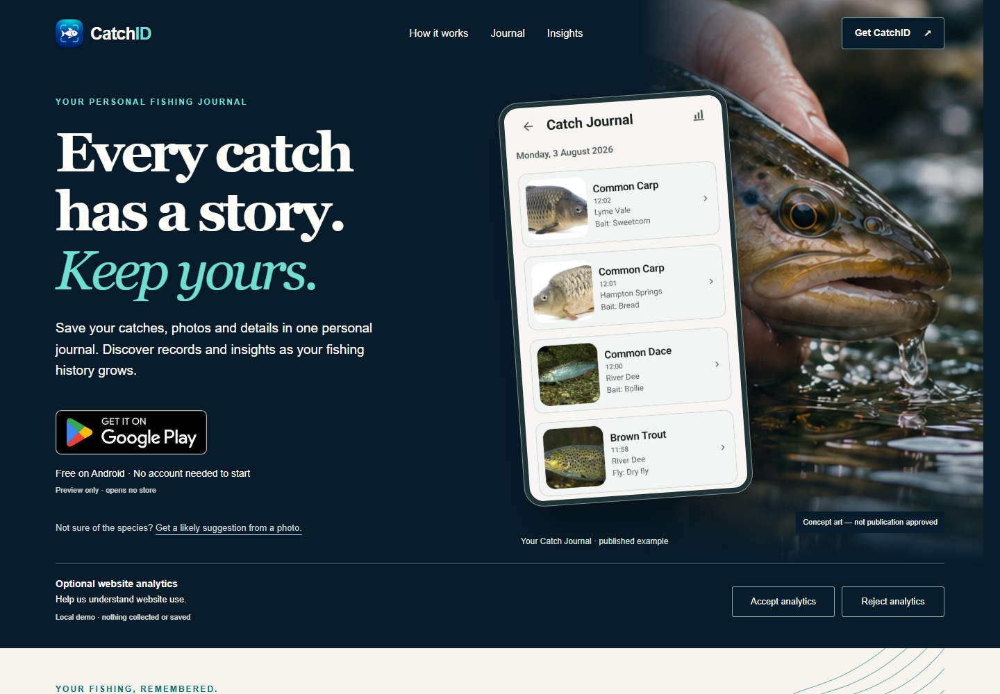
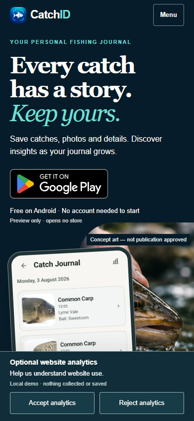
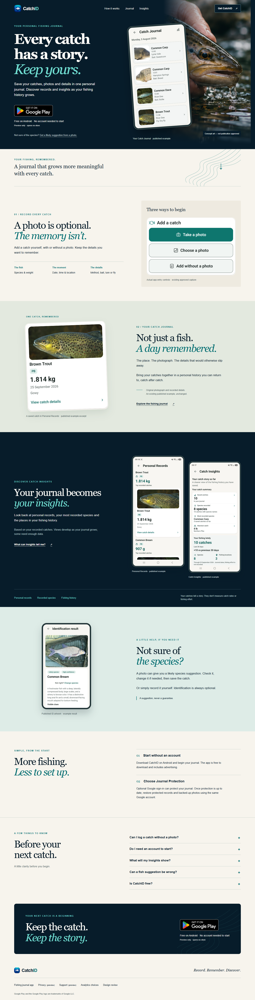

02 / THE JOURNAL LANDING PAGE
A practical search-intent opening, a three-step logging guide, and the same considered product, trust and FAQ system.
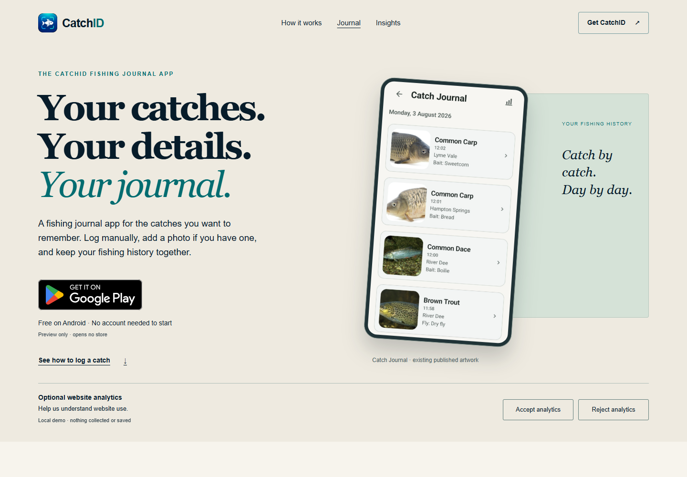

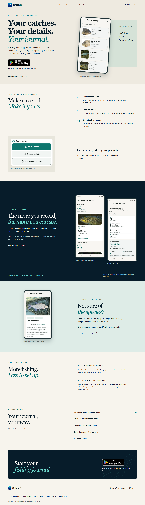
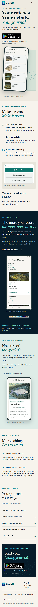
CRO-03 → CRO-03A
The approved design is preserved. These refinements bring a real saved catch above the first-visit consent panel, restore the mobile photograph, and replace the repeated journal phone with an authentic saved-record excerpt.
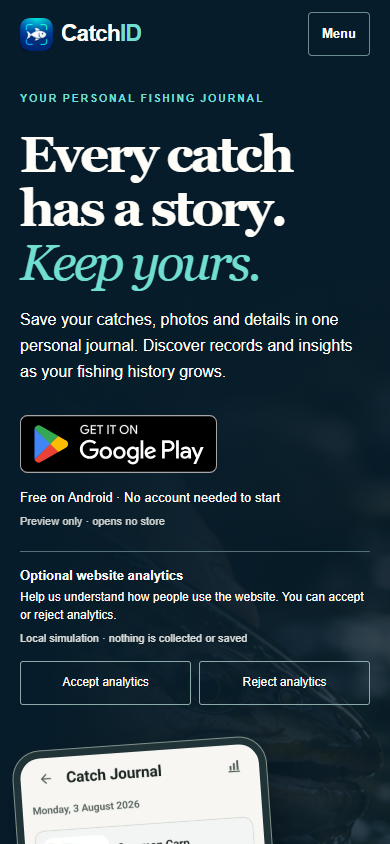
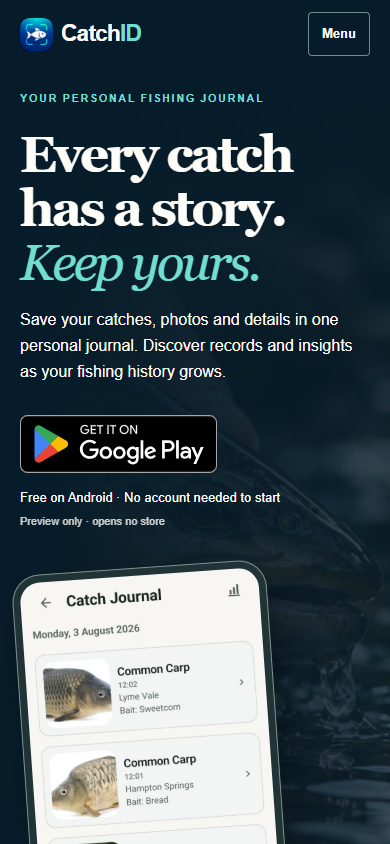
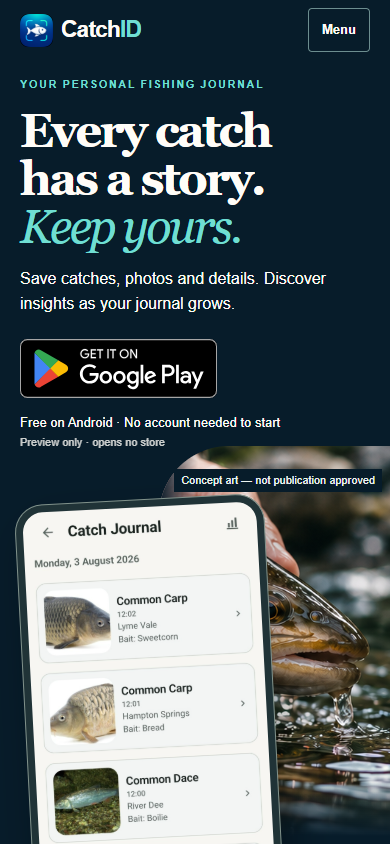
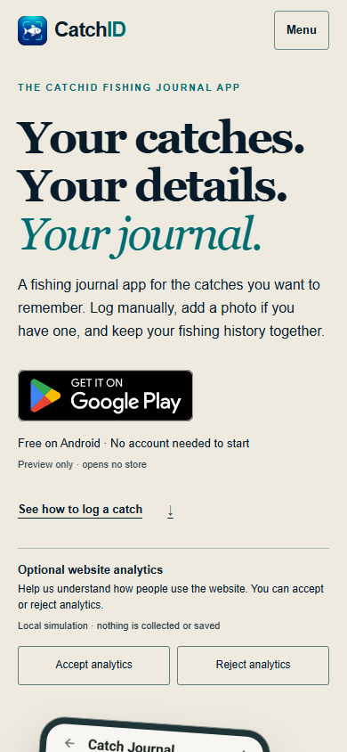
THE APPROVED DIRECTION, MADE REVIEWABLE
The reference UI is fictional. The design below preserves its hierarchy and atmosphere while replacing every product panel and badge with approved assets.
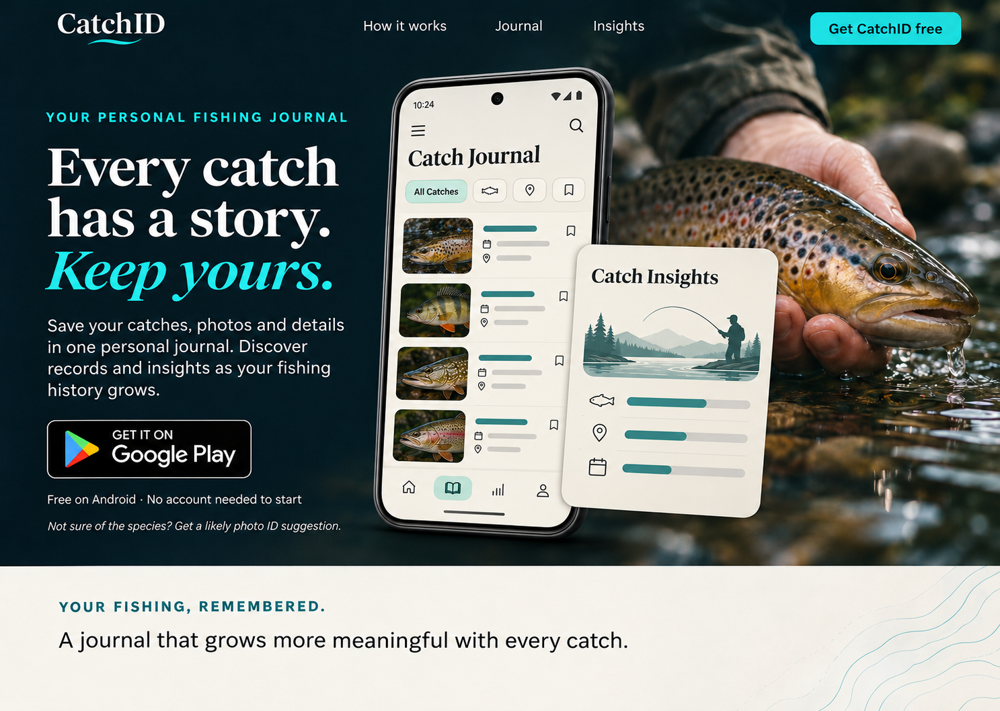
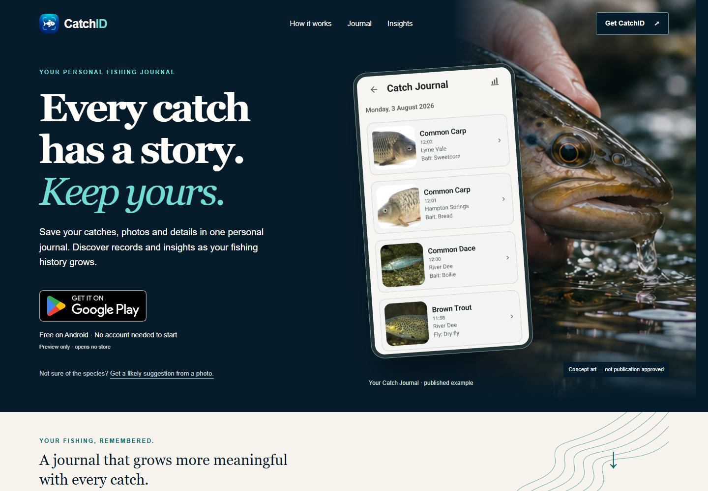
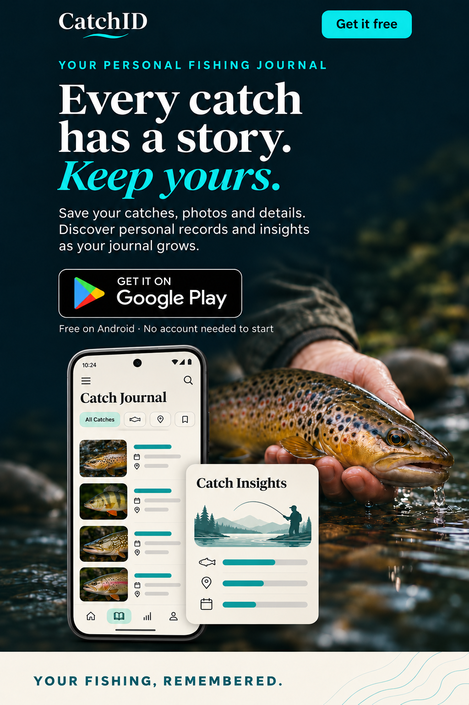
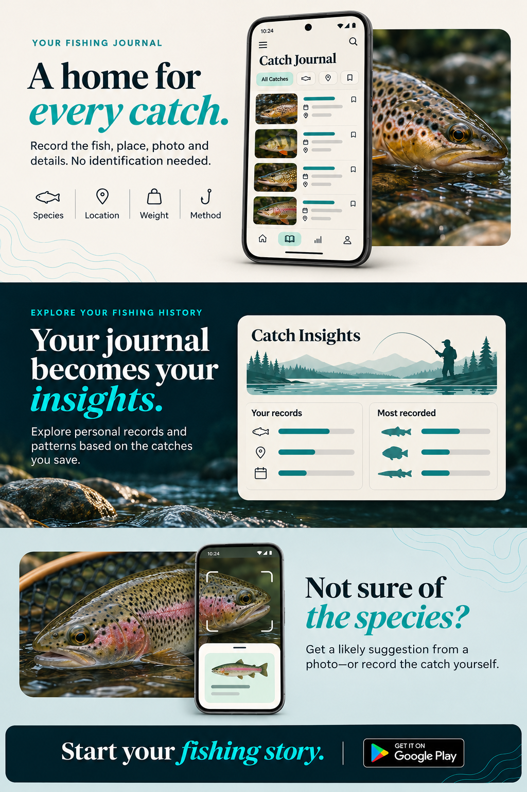
REVIEW, NOT RELEASE
A compact mobile opening with equal consent controls; then a brighter, repositioned photograph and varied saved-catch proof. Original CRO-03 comparisons are retained.
Read the visual self-review ↗Both pages at seven widths, first/saved consent and 1.6× mobile text. Offline navigation, equal consent choices, local badge dialogs and blocked external requests.
Read QA and limits ↗Photography rights and fresh populated Journal, Add Catch, Catch Details and Insights captures remain future asset gates. No fabricated UI or new catch data.
Read asset provenance ↗Next action: Pete and ChatGPT inspect this design and approve or request revisions. Implementation and publication require a separate decision.